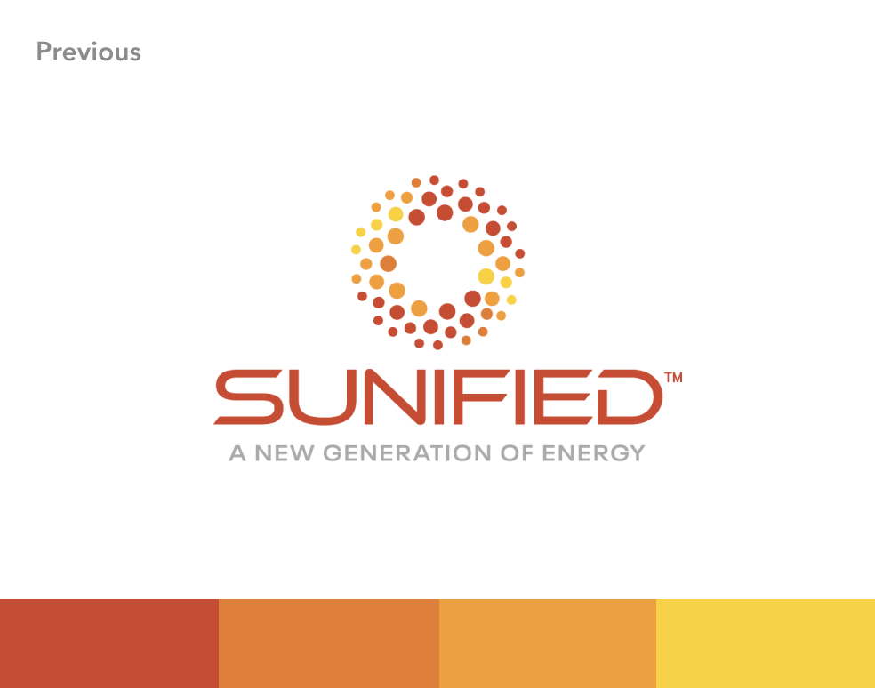
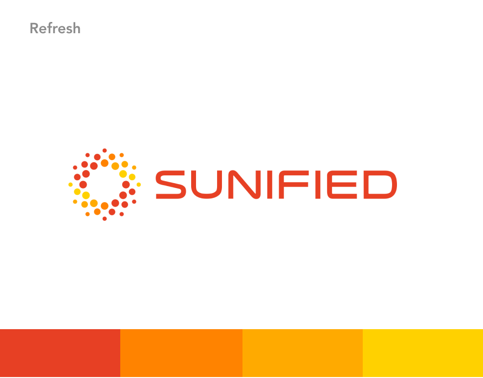
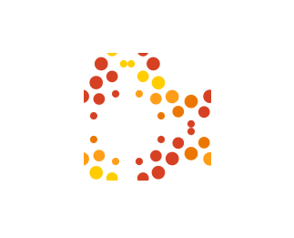
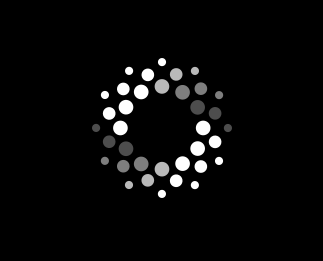
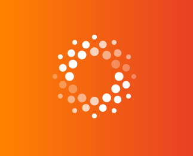
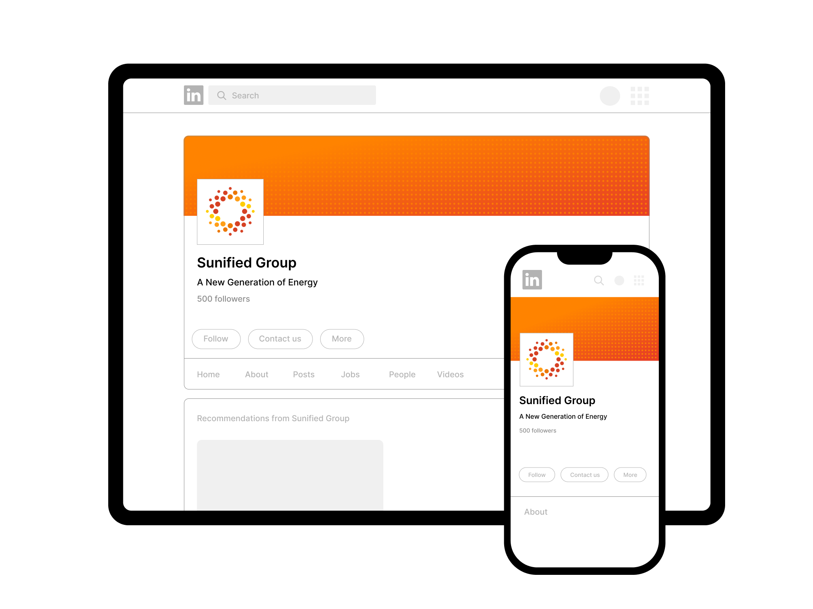
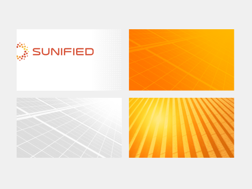
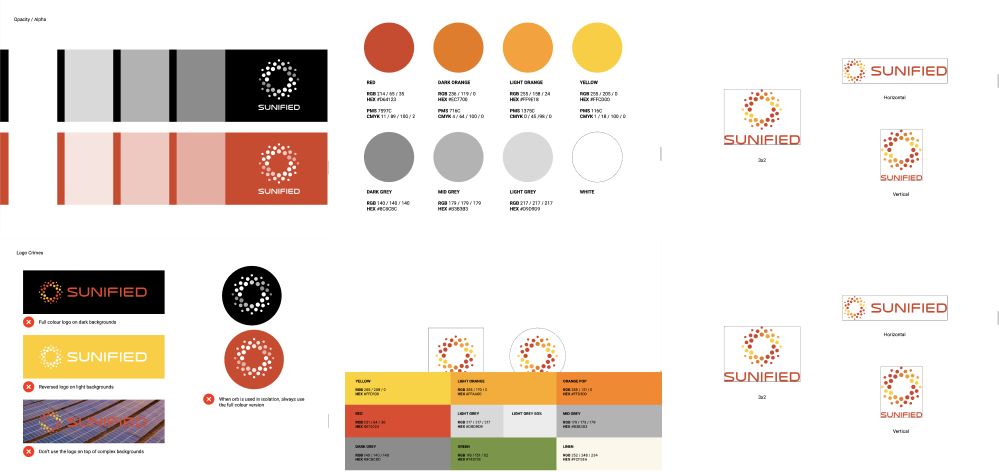
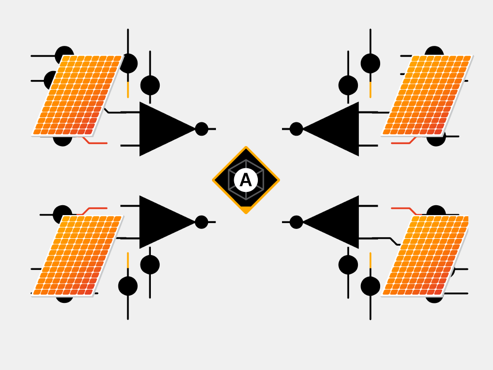
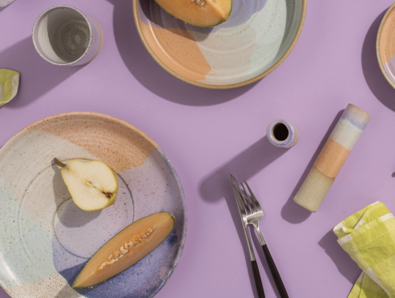

Sumfried
Brand identity
Sumfrid is a technology startup with a suite of solutions for the solar energy industry. Their technology alleviates existing problems, and unlocks the potential to fast-track the uptake of renewable energy.
Brand identity > Visual identity > brand strategy


The challenge
Inherited brand assets
Sumfrid existed in the market before I joined the team. Despite them being a relatively new company, and one whose mission is to create innovative technology solutions, the brandmark did not reflect this successfully. The brandmark felt dated, visually disjointed, and was not functional – the colours were not optimised for digital, and the positioning line made the brandmark unusable at a small size.
The solution
Brand refresh
In essence, the existing brandmark had solid foundations. I updated the colour palette, simplified and reconfigured the graphic element, crafted the typeface, and removed the positioning line. By strengething the individual parts of the brandmark I was able to use them in isolation, extending the versatility of the brandmark, without compromising recognition.



The challenge
Branding without strategy
Like many startups, Sumfrid hit the ground running and didn’t invest in developing a brand strategy, so there were no insights for me to build upon, and to inform design decisions.
The solution
Visual design as the platform for growth
In the absence of a brand strategy, I took the lead to develop a visual identity based on content from existing comms, my design expertise and a hell of a lot of assumptions.
The primary assumptions I was able to make was that Sumfrid needed to present professional, trustworthy, innovative, and experts in their industry. My task was to create a compelling and consitent suite of assets, building on the look and feel of the brandmark, to establish brand awareness and create a foundation for growth. Consistency = trust. Awareness




The challenge
Adoption of brand something
For a brand to be successful, there needs to be adoption and uptake. Many people don’t understand brand or the power behind it, and what happens in the abscence of it.
The solution
Education and management
For Sumfrid to have the best chance for success, it was vital for the internal team to adopt brand guidelines, and for all comms to be consistent. An inconsistent brand creates a lack of trust. I created a basic set of brand guidelines as well as assets and templates to guide the team in best practices.

Next project

Supporting Sumfried’s core visual identity, narratives (technology) (geolocation) secondary {visual} systems needed to be created to articulate communications with a specific purpose.
Case studyarrow_forward

An application of the brand refresh and visual identity, Sumfried needed a suite of presentation decks for fundraising, investor relations, sales, events and internal documents.
Case studyarrow_forward

Sumfried launches the next iteration of their website to be inclusive of a range of products, customer segments, solutions and projects.
Case studyarrow_forward
